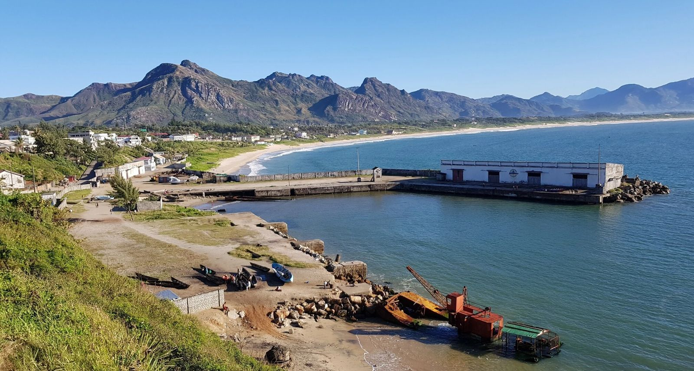
Madagascar Travel – The Southeast
Fort-Dauphin to the Jungle Express: spiny forests, wild coastline, Pangalanes pirogue rides, and a train journey through tropical rainforest few tourists ever see.
Read more →Part Fantasy, Part Fable, yet it’s right out there. Madagascar’s Wildlife is unlike anything you’ve seen, its people unlike anyone you’ve ever met, and a journey you will never forget. Get to know the land and it’s inhabitants through our travel programs.
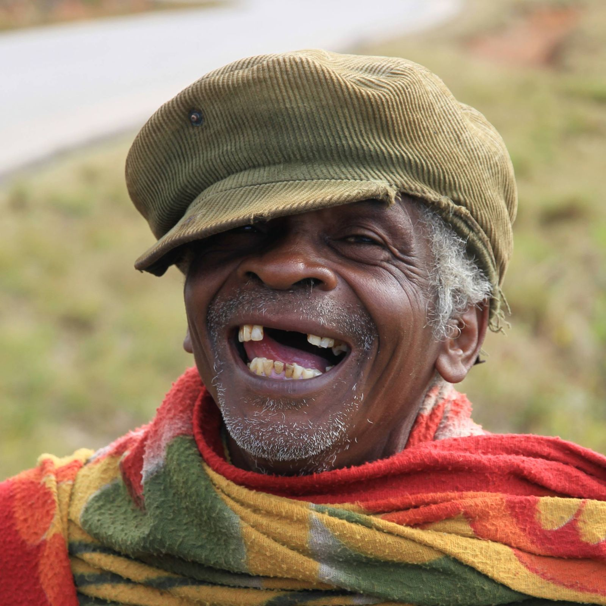

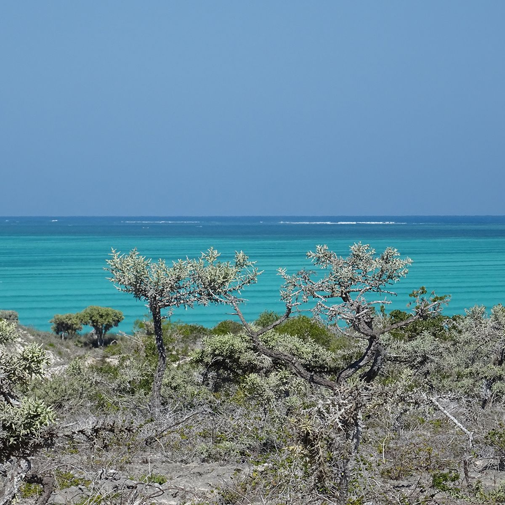
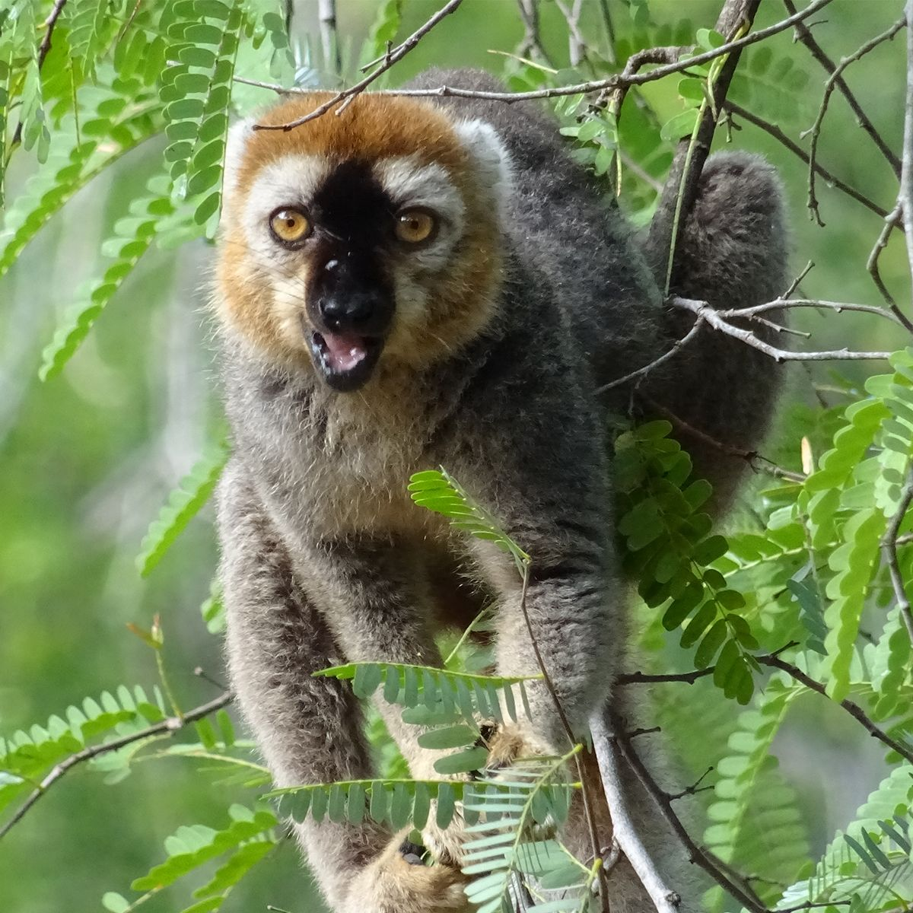
House of Madagascar is a resource and travel guide purely focused on this extraordinary island. It represents PRIORI Madagascar, based in Antananarivo founded and directed by Franz Stadelmann, a Swiss national and former development aid worker who has been active in Madagascar since 1988.
Franz Stadelmann's first steps on the island as a development aid worker.
Decades of deep local knowledge and trusted connections across the island.
Mon–Fri 9:00–18:00 Visits by appointment outside hours.
103 rue de Liège, Tsaralalana, near the Café de la Gare.
“Three decades in. The people shaping your trip know Madagascar the way only time and presence can teach.”
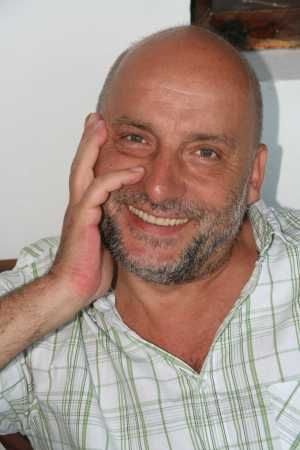
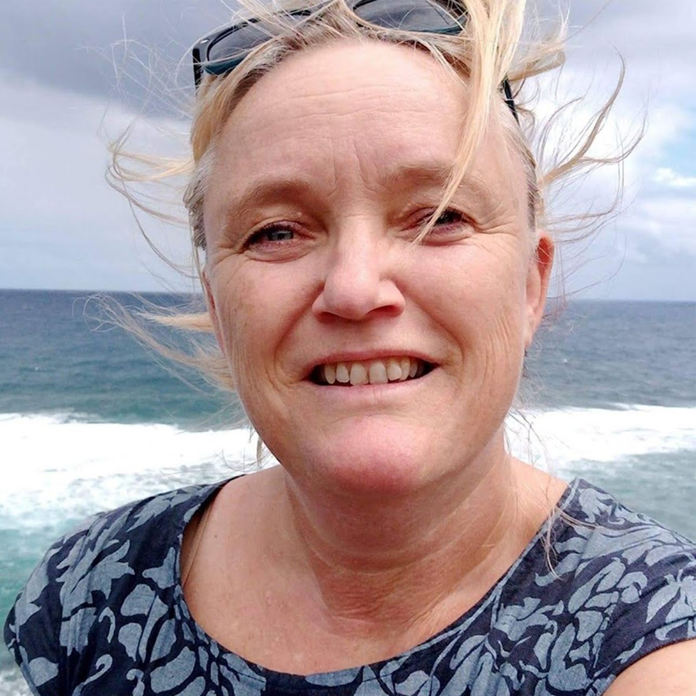
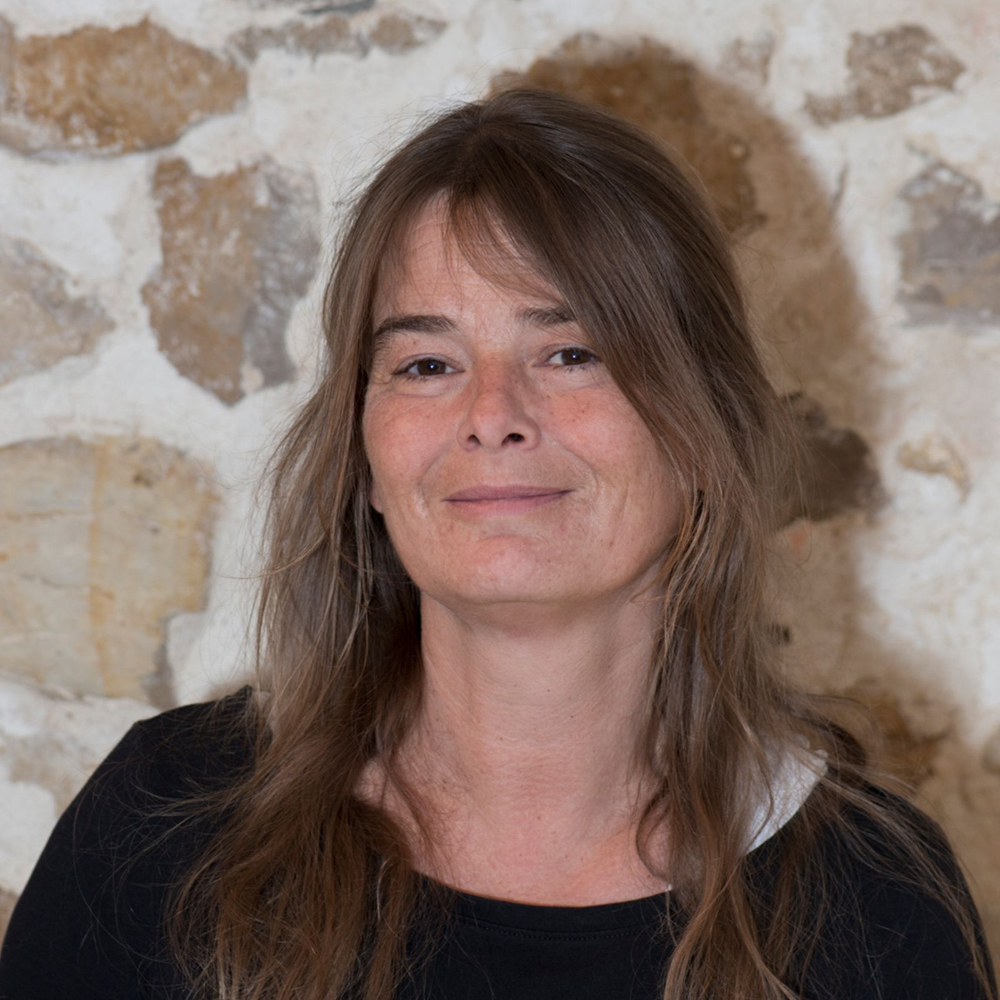
While our main office is based in Switzerland, PRIORI's heart is in Antananarivo. Our all-Malagasy team on the ground, carefully chosen by Franz from the start, has been overseeing operations in Madagascar for more than 30 years. They are your direct contact on the island and are available at priori@moov.mg or through priori.ch .
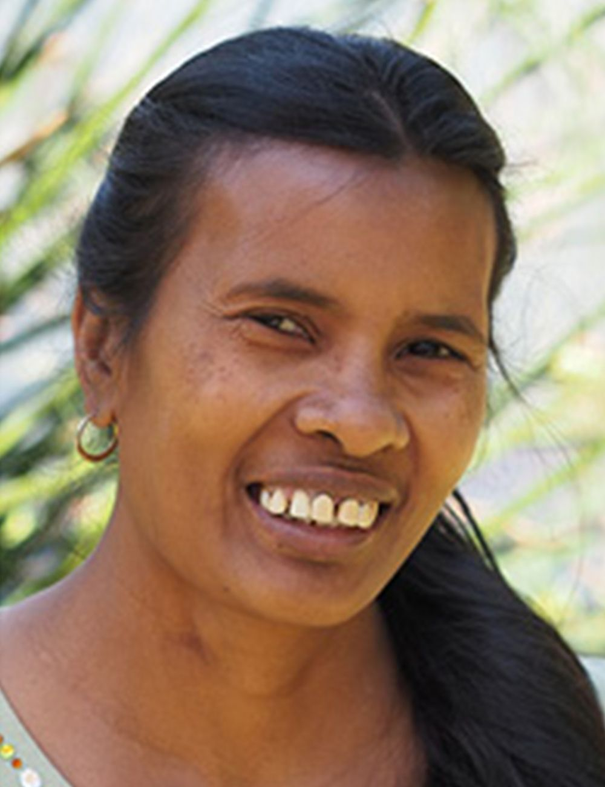
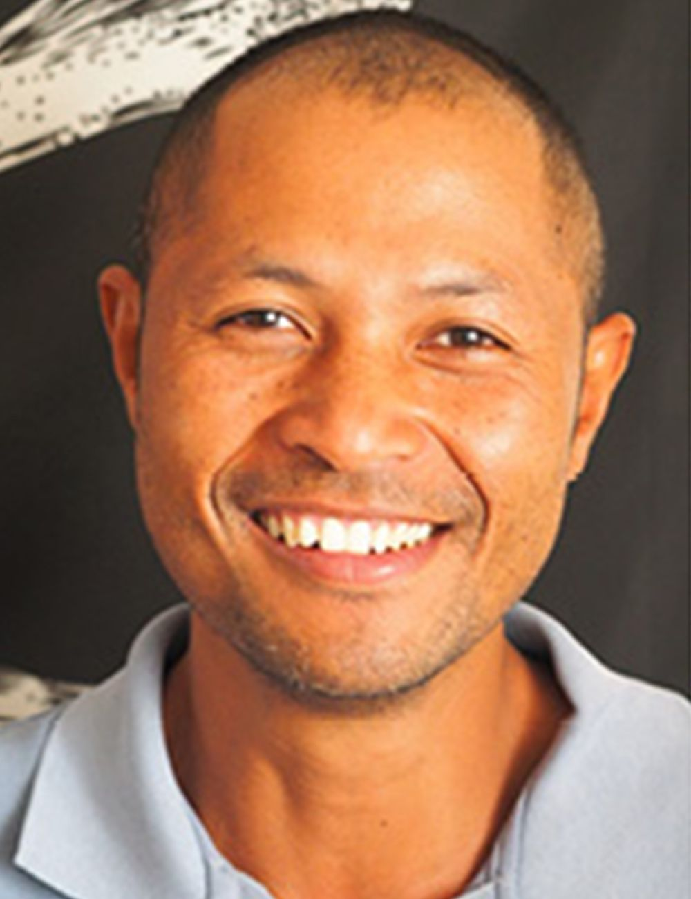
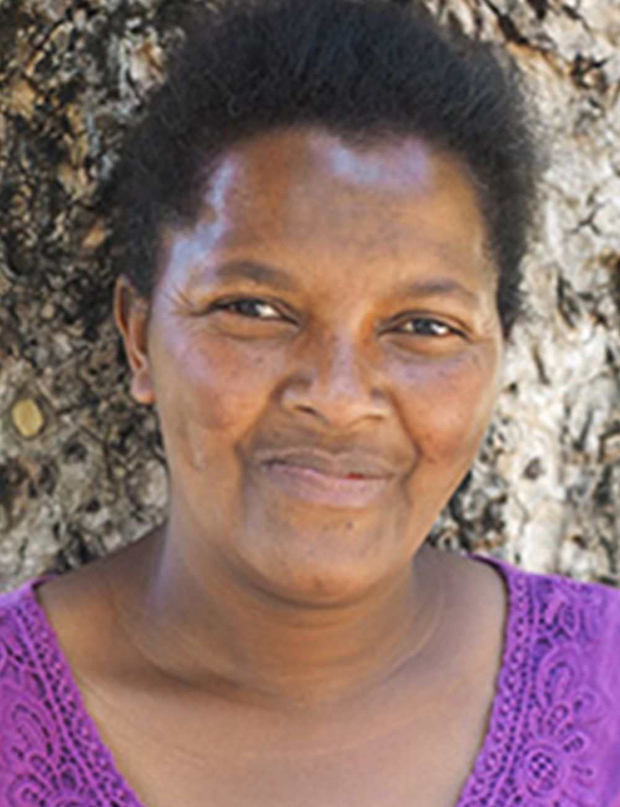
Travelling with PRIORI
"Our goal at PRIORI is to reveal the many facets of Madagascar. This unique island offers an experience like no other. We would love to make that experience yours."
No two travelers want the same thing. Some come for the wildlife, others to connect with local people and support the communities they visit. Some prefer to go it alone, without a plan or a guide. And a few want something completely different: a motorcycle journey, say, from the capital down to the remote south.
Well, we are certain you have your own requests, and we're here for that. Tell us exactly what you want and how you would like to experience this journey, and we'll give you something you will cherish forever.
Start planning my journey

Fort-Dauphin to the Jungle Express: spiny forests, wild coastline, Pangalanes pirogue rides, and a train journey through tropical rainforest few tourists ever see.
Read more →
Travelling safely in Madagascar, with a driver who knows the roads, the language, and the people.
Read more →
From amber-tinged rainforest to white-sand shores, a journey through the many faces of Madagascar's northern tip.
Read more →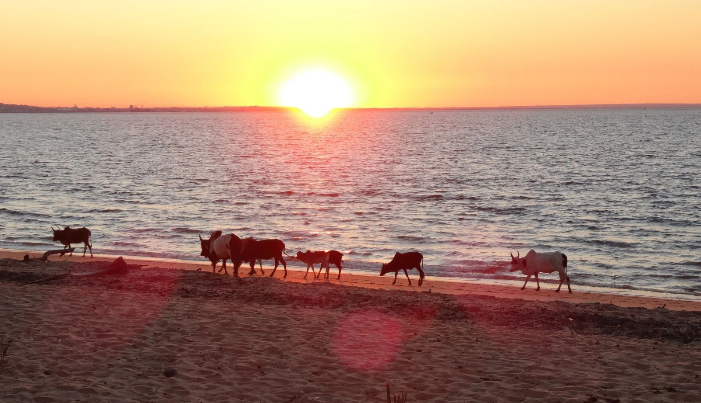
From the High Plateaux to the vertiginous Tsingy, from giant baobabs to the deserted beaches of the Mozambique Channel, the West of Madagascar in all its diversity.
Read more →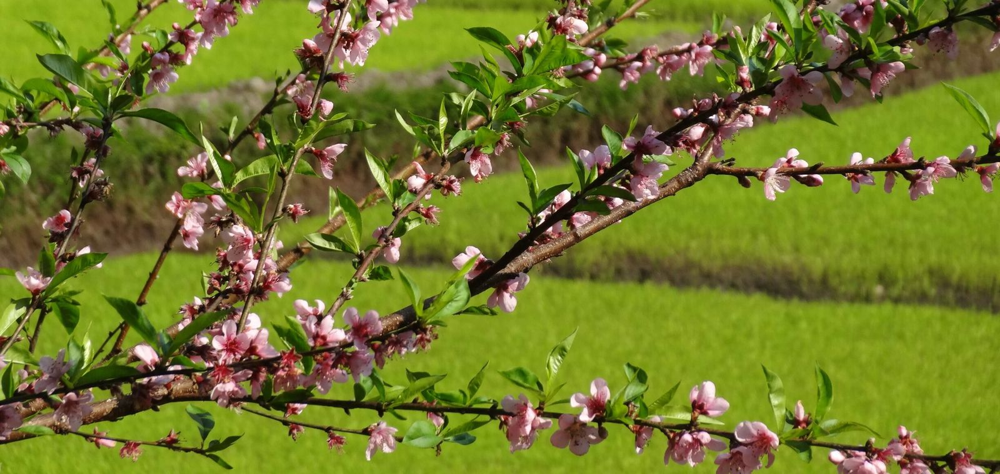
A steam train through the tropical forest, lemurs in the wild, and the sun-drenched shores of Île Sainte-Marie, Madagascar at its most alive.
Read more →
Saddle up a lightweight Chinese-built motorcycle and cross Madagascar off-road with an experienced guide. You will NEVER forget this.
Read more →PRIORI Reisen GmbH · Holeestrasse 6 · 4054 Basel